Features
PiGallery 2 is a self-hosted directory-first photo gallery website.
Try our live demo! (First load may take up to 60s while the server boots up)
Key Features
Photo Viewer
Nice photo viewer with an optional information panel that shows all important information about the photo. 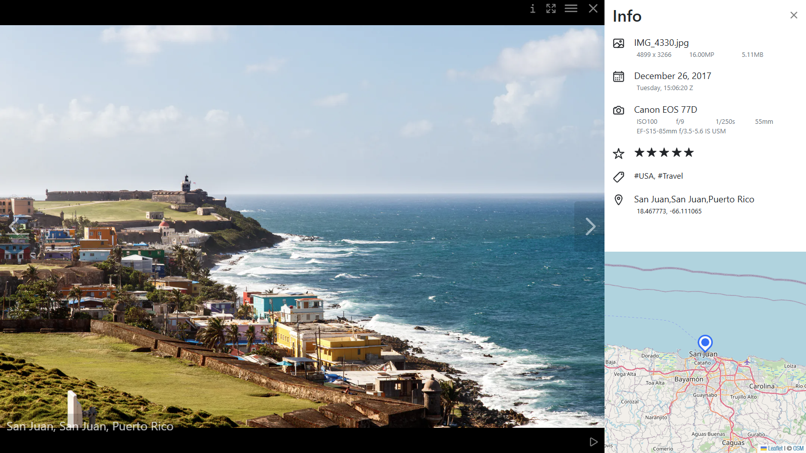
{kind=link}
Map
PiGallery2 reads the location data of the photos and puts them on a nice map.
It supports OpenStreetMap and Mapbox by default, but you can also add your own favorite map provider.
The gallery also supports .gpx files to show your tracked path on the map. It recognizes different types of activities (e.g., running, flying) from the .gpx files and shows them with different colors and icons.
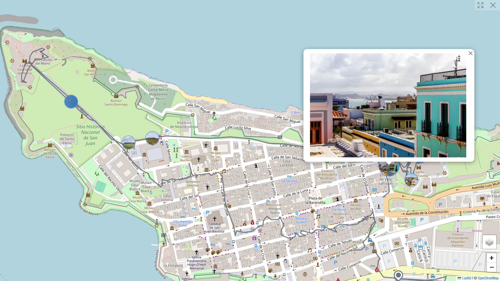
{kind=link}
Advanced Searching
Supports full boolean logic with negation and exact or wildcard search. It also provides handy suggestions with autocomplete. 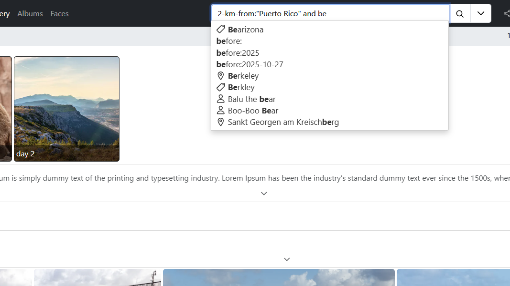
{kind=link}
Match Types
person:"John" # exact match
person:(John) # wildcard match
person:John # same as person:(John)
person!:John # negation
Supported Keywords
Range queries:
date:2020
rating:5
resolution:1 (in MPX)
person-count:10
All possible range usage:
rating:4..6
rating=4
rating!>3
rating>3
rating!>=3
rating>=3
rating!<3
rating<3
rating!<=3
rating<=3
orientation:portrait
orientation:landscape
keyword:"house"
caption:"caption"
directory:"dir name/another dir"
file_name:"img.jpg"
person:"John"
position:"USA" # use city, state, country names
5-km-from:(New York) # photos 5 km from the center of New York
any_text:"apple" # searches for apple everywhere, "any_text:" can be omitted
last-4-days:every-week
last-4-days:every-month
last-4-days:every-year
last-4-days:2-days-ago
last-4-days:2-weeks-ago
last-4-days:2-months-ago
last-4-days:2-years-ago
Bool Expressions
John and Kate # photos with "John" and "Kate" (any string match)
John Kate # same as "John and Kate"
John or Kate # photos with "John" or "Kate" (any string match)
2-of:(John, Kate, Steve) # lists photos that satisfy at least 2 out of the 3 names
Folder Sorting
Add an empty file like .order_[ORDER].pg2conf to a folder to override the default sorting for that folder. It's not recursively applied to subfolders.
Replace [ORDER] with one of the following:
- descending_name
- ascending_name
- descending_date
- ascending_date
- random
Sharing
You can share your photo folders with your friends. Sharing links can be password protected. 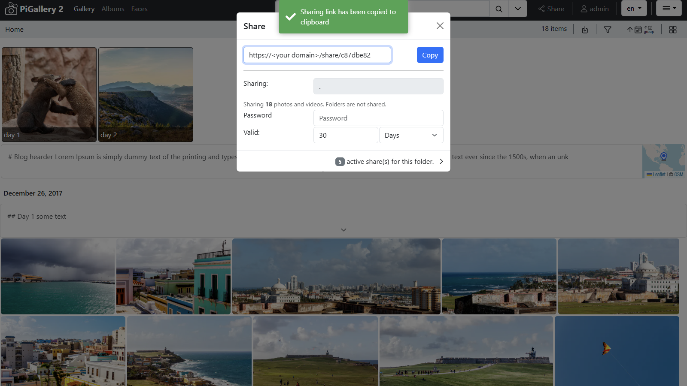
{kind=link}
Video Playback
Supports .mp4, .webm, .ogv, and .ogg files.

Local Filters
Rich filter panel to further filter your directory or search results. 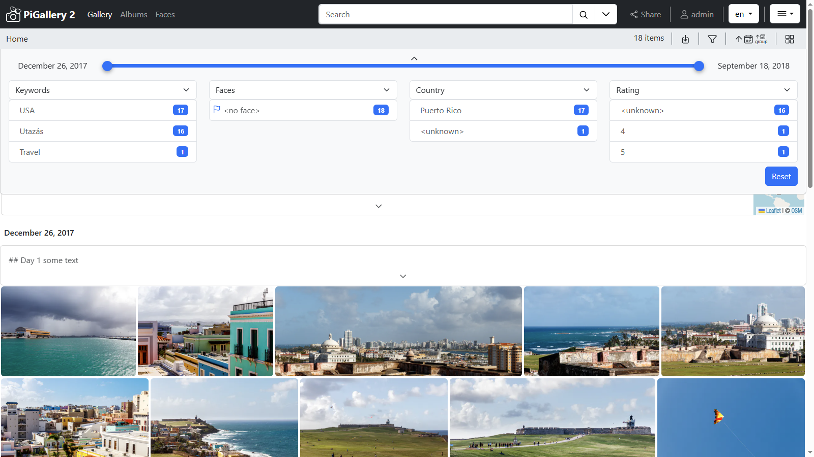
{kind=link}
Blog
Add .md files to your directory and the app will show them. You can tag sections in the .md files with <!-- @pg-date <ISO_DATE> --> to attach them to a date.
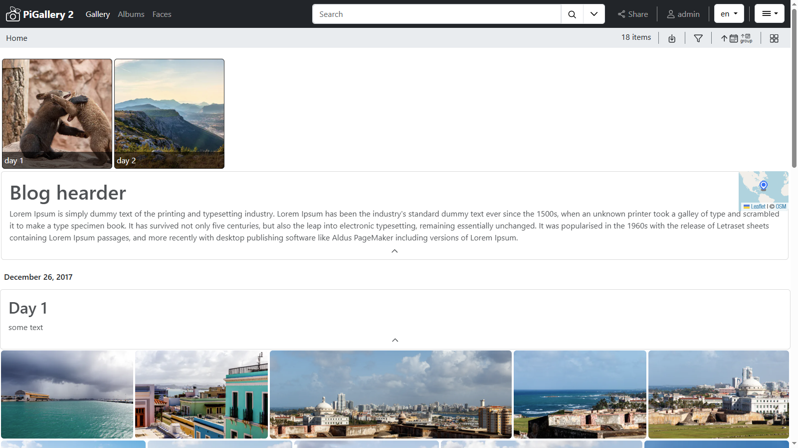
{kind=link}
Logical Albums
Create logical albums (Saved Search) from any search query. 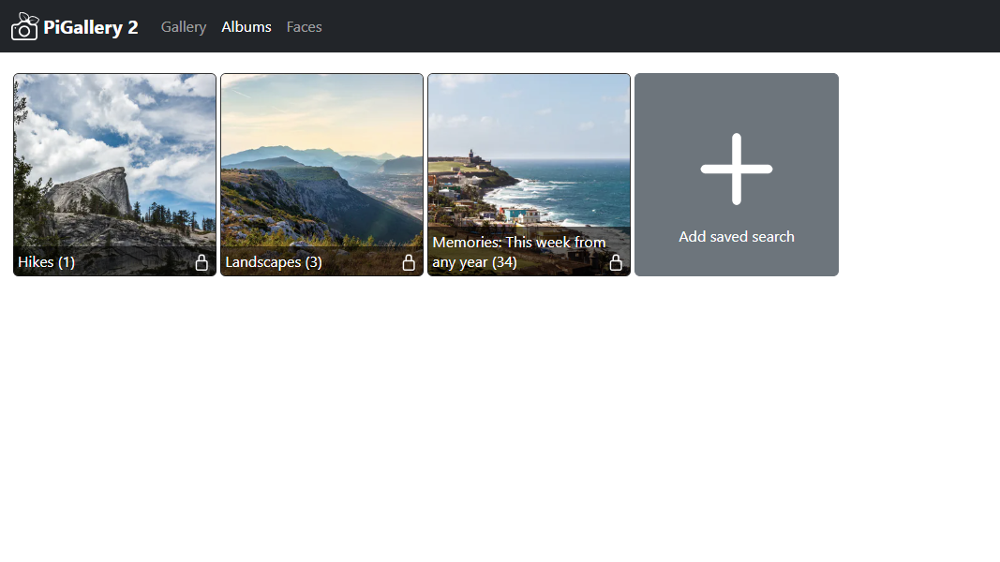
{kind=link}
Faces
Reads Adobe's XMP Face region metadata and shows face bounding boxes over images. 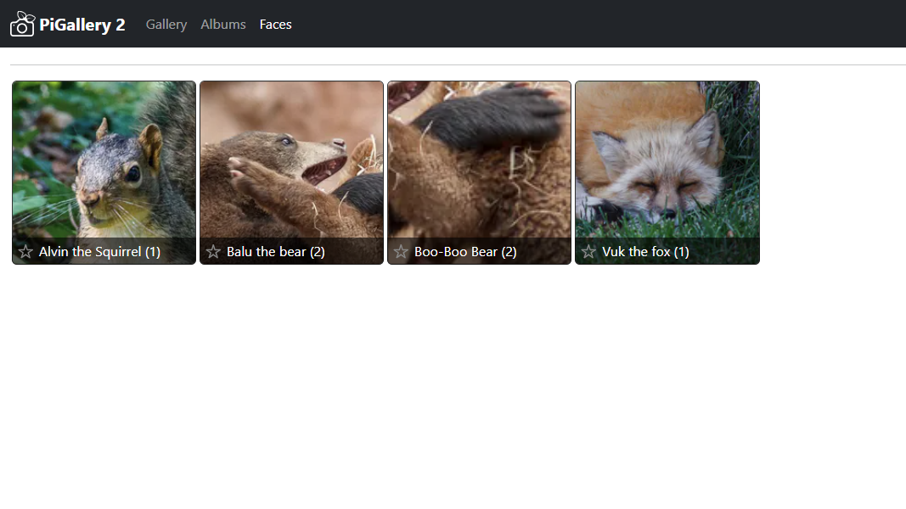
{kind=link}
Random Link
Create a link that serves a random photo from your gallery, useful for 3rd party applications like wallpaper changers. 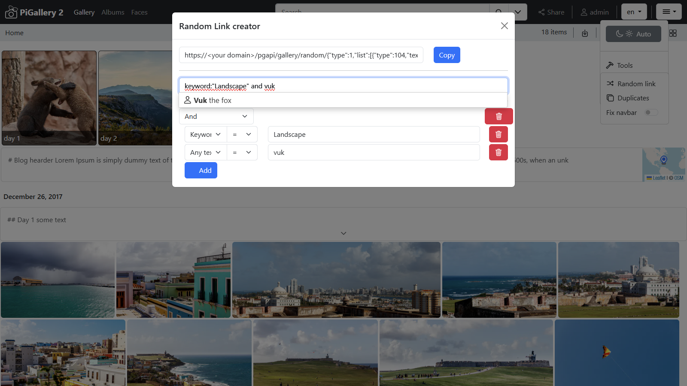
{kind=link}
Rich Settings
Easy setup through a rich settings page. 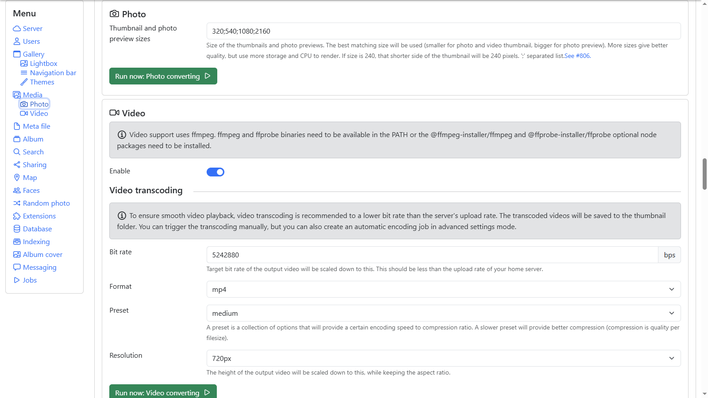
{kind=link}
Per User Filter
Set up allow and block list filters for each user or the whole gallery. 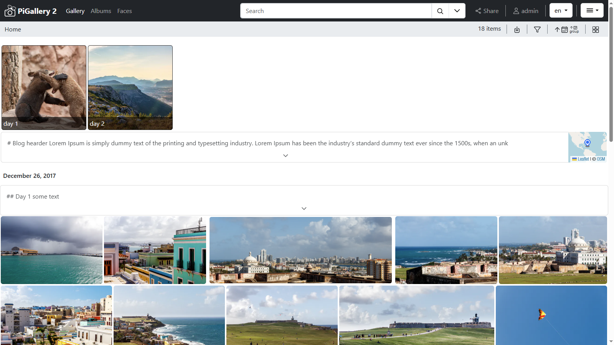
{kind=link}
Photo Frame
Generate a photo frame link for the given directory or search result to automatically show and loop through photos.
Recommended usage with a Kiosk app.
Search for (person:John or person:Kate) and last-7-days:every-year, then Menu -> Tools -> Photo Frame.
Extension support
Build your own extensions. Mostly server-side changes are supported with minimal UI modifications. You can add your own button to the photos and do whatever on the server side. See: Extension Development 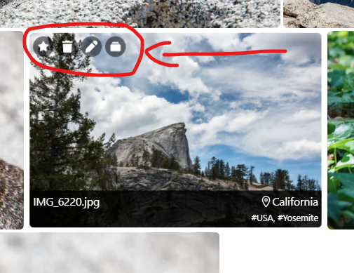
{kind=link}
Detailed Feature List
- Supported Formats:
- Images:
jpg, jpeg, jpe, webp, png, gif, svg, dng*, arw*, heic*(depends on the docker container's vips build) - Videos:
mp4, ogg, ogv, webm
- Images:
- Rendering directories as is:
- Recursive subdirectories listing.
- Nice grid layout for photos.
- Shows tags/keywords, locations, and GPS coordinates.
- On-demand rendering (on scroll).
- On-the-fly Thumbnail Generation:
- Multiple sizes.
- Prioritizes visible photos.
- Saves thumbnails to TEMP folder.
- Multi-core CPU support.
- Hardware acceleration support (sharp).
- Custom Lightbox:
- Full-screen photo and video viewing.
- Keyboard navigation.
- Low-res thumbnail while full image loads.
- EXIF info panel.
- Automatic slideshow.
- Gesture support (swipe left, right, up).
- Authentication options:
- No authentication.
- Basic, built-in authentication.
- ORCID support #1096
- Client-side Caching: For directories and search results.
- GPS & Maps:
- Render photos on OpenStreetMap.
.gpxfile support for rendering paths.- Support for any tile URL provider.
- Photo Frame:
- Automatically show and loop through photos of a given directory or search result. #1060
- Extensions: Build your own extensions. See: Extension Development
- Upload support: Drag and drop allowed with per-directory whitelist. #1118
- Snappy Experience: Indexes gallery to DB (MySQL and SQLite support).
- Faces (Persons): Reads Adobe's XMP Face region metadata.
- Internationalization: Full translation support.
- Responsive Design: Phone, tablet, and desktop support.
- Setup Page: Easy configuration UI.
- Random Photo URL: For 3rd party integrations.
- Video Support:
- Transcoding to
.mp4. - Video thumbnails via ffmpeg/ffprobe.
- Transcoding to
- Job Scheduling: Task management for indexing, transcoding, etc.
- Custom Configuration:
.pg2conffiles for UI behavior modification. - Dockerized: Easy deployment.